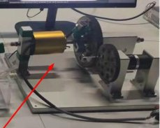

Academic bedside robots · bupt_yang2022
BUPT guidewire robot
BUPT guidewire feeding robot (friction-wheel push-pull, gear rotation) used for deep-RL guidewire feeding on a vessel phantom

1 / 2

- Family
- Academic bedside robots (academic)
- Devices
- one guidewire (type N.R.)
- Degrees of freedom
- 2: push-pull and rotation, decoupled (Sec. IV-A)
- Push
- Friction rollers
- Twist
- Other
- Tested up to
- Phantom
- Sim-to-real
- None found — No simulation-trained controller found for this robot.
Testing
- Highest level
- Phantom
- What was tested
- phantom: two training-and-test experiments on the physical phantom, (1) push-pull only, 500 episodes of <= 150 steps in 2.5 h, converged after about 260 episodes; (2) push-pull plus rotation, 500 episodes in 4.2 h, converged after about 300; test runs reached the target within the 40-pixel (about 5 mm) termination criterion (Sec. IV-C, Figs. 8-13). Number of test runs N.R.
- Key numbers
- push-pull accuracy 1 mm, rotation accuracy 5 deg (Sec. IV-A); action limits +/-20 mm, +/-90 deg (Sec. III-A); feeding error < 5 mm, tip detection >= 92.9 % (Abstract); YOLOv5s 23 ms per image (Sec. IV-B)
Mechanism
- Push (translation)
- friction-roller: 'It moves the guidewire forward or backward via a pair of friction wheels clamping it' (Sec. IV-A)
- Twist (rotation)
- 'The rotation of the guidewire around the central axis is achieved by a pair of rotating gears' (Sec. IV-A)
- Device range
- N.R.
- Target anatomy
- abdominal-aorta target in a vessel phantom with pumped water at a controlled temperature (Sec. IV-A, IV-C, Figs. 1-2, 7); detection images from the phantom's femoral artery and aortic arch (Sec. IV-B)
Sensing and interface
- Force sensing
- none (force from the motor current proposed as future work, Sec. V)
- Leader and haptics
- none: an autonomous SAC agent on a server sends (push-pull, rotation) actions (Sec. IV-A, Fig. 2)
- Imaging
- camera above the transparent phantom; the YOLOv5s tip detector was also run on angiographic images (Fig. 5); fluoroscopy with the robot N.R.
- Sterility
- N.R.
Size
- Footprint (mm)
- N.R.
- Mass (kg)
- N.R.
Simulation
- Simulation model
- none found
- Sim-trained controller
- none found: the policy is trained on the physical phantom without a simulator ('To avoid the error caused by the virtual simulation environment, we built an interventional surgery experimental platform based on vessel phantom', Sec. IV-A)
Versions
- Lineage
- single paper (yang2022_guidewire, ICMA 2022); the robot is described only in its Sec. IV-A
Sources
- Guidewire feeding method based on deep reinforcement learning for vascular intervention robot · 2022 IEEE International Conference on Mechatronics and Automation (ICMA), 2022 · doi:10.1109/icma54519.2022.9856351 [yang2022_guidewire]
- Robotically steerable guidewires—Current trends and future directions · Science Robotics, 2025 · doi:10.1126/scirobotics.adt7461 [konda2025_robotically]
Notes
- Notes
- N3 2026-11-08, from review_comparison Sec. 1.3 (Konda 2025 control row 37, ref. 129, one of the 'learning-only controllers'). The controller ran on this physical robot, so the robot itself is catalogued. No other paper describing the robot was found. Picture is 229 px wide and carries the tip of a red pointer: the robot is about a third of the 727 px setup photo.
This record
- Read level
- full
- Picture
- yang2022_guidewire Fig. 1 (experimental platform), right part, p. 4 ↗ — licence: publisher copyright (IEEE); grade C
- Picture changes
- native embedded raster (727 x 456) cropped to the robot (box 498,195,727,378); tip of the red pointer of the 'guidewire feeding robot' label remains at the lower left; not upscaled
- Found by
- gap: Gap searches for robots the other searches missed.
- Data
- JSON · YAML:
records/robots/bupt_yang2022.yaml - Correction
- Suggest a correction [repository not created yet]